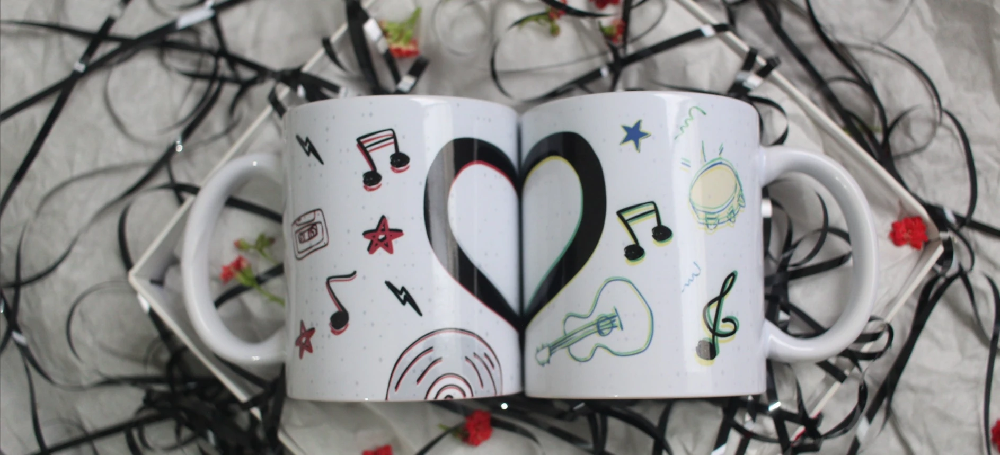

Canecas com história.
Explore algumas das criações do Studio. Todos os pedidos são tratados mediante orçamento, incluindo ideias e personalizações sob medida.

01 / Modelo existente
Escolha uma arte
Escolha uma das artes apresentadas e consulte as possibilidades de personalização.
02 / Projeto exclusivo
Uma ilustração só sua
Desenvolvemos uma criação autoral a partir de suas ideias, sentimentos ou da identidade da sua marca.
Solicitar criação exclusiva ↗